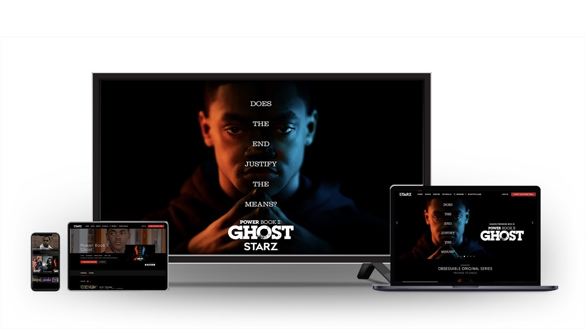

How to Sign up for starz.com/activate
Starz TV has launched its app that supports all major streaming platforms. From Roku to Apple TV, the Starz TV app supports all streaming devices. Watch some exciting shows and movies without any interruption on your choice of devices. It gives access to its streaming service on starz.com/activate almost anywhere on many devices.

How do you Sign up At Starz.com?
Before subscribing to Starz play services you need to complete the signup process. You can only buy a subscription after logging into the account. Just trail the following steps to sign up for Starz:
- Visit starz.com/activate the official website.
- Now click on the “Claim special offer” to move forward.
- Now enter your email. Also, read the offer terms before clicking the Continue button.
- Now enter your personal information and click on your choice of payment method.
- Enter your first name and last name then your preferred payment method. You could choose between a credit card or PayPal.
- You will need to enter your credit card number, expiration date, CVV, and ZIP code.
- You can also enter your PayPal information if you are choosing this method of payment.
- Now click on “subscribe” to generate a password for your Starz account.
- You have successfully created a Starz account for yourself!
How to Activate Starz on Roku via Starz.com/activate?
- Sign in to your Roku device.
- Go to Home on the device’s menu and select “Streaming Channels”.
- Search for the Starz channel and then select “OK” to add it to the device.
- Launch the channel and log in using your email address and password (used to sign up for the service)
- Go to starz.com/activate and enter the activation code on the TV screen on the provided box to activate the service.